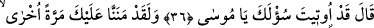
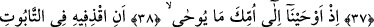
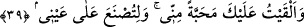

MÛSÂ’YI SANDIĞA KOY,
DENİZE BIRAK
36. Allah buyurdu: Ey Mûsâ, istediğin sana verildi.
37. Andolsun biz sana bir defa daha lütufta bulunmuştuk.
38. Bir zaman, vahyedilecek şeyi annene (şöyle) vahyetmiştik:
39. Mûsâ’yı sandığa koy; sonra onu denize (Nil’e) bırak; deniz onu kıyıya atsın
da, benim düşmanım ve onun düşmanı olan biri onu alsın. (Ey Mûsâ! Sevilmen) ve
benim nezaretimde yetiştirilmen için sana kendimden sevgi verdim.
“Allah buyurdu: Ey Mûsâ, istediğin sana verildi.” Allâh’ın vermesinden maksad,
O’nun iradesinin Mûsâ (a.s.)’ ın arzusunun gerçekleşmesine taalluk etmesidir.
Dâvud Kayserî (k.s.) şöyle der: “Kutubların kemâlâtından ve Allâh’ın onlara
ihsânından birisi de Allâh’ın onları câhillerin sohbetiyle imtihan etmemesidir. Bilakis
onları âlim, edebli ve güvenilir kimselerin sohbetiyle rızıklandırır. O kimseler onların
ağırlıklarını hafifletir, emirlerini ve sözlerini yerine getirirler.”
Bu tıpkı zamanının kutbu, âlemin mutasarrıfı olan Süleyman (a.s.)’a Âsaf b.
Berhıya’nın vezir olması gibidir. Allah Teâlâ’nın Kur’an’da hikâye ettiği üzere ondan
Belkıs’ın arşını getirme husûsu zâhir olmuştur.
Enûşirvân sık sık şu sözü söylerdi: “Kılıçların en iyisi cilâsız, bineklerin en iyisi
kamçısız olmaz. Meliklerin en bilgili olanı da vezirden müstağnî olamaz.” Bir hadiste
şöyle buyrulmuştur: “Allah bir melikin iyiliğini isterse ona iyi bir vezir verir. Melik
unuttuğunda ona hatırlatır, hayırlı bir işe niyet ederse yardım eder, kötü bir işe niyet
ederse ona engel olur.”[72]
Rasûlullah (s.a.)’in de yardımcıları vardı. Nitekim O şöyle buyurmuştur. “Benim
yerde ve gökte ikişer vezirim vardır. Yerdekiler Ebû Bekir ve Ömer, göktekiler Cebrâil
ve İsrâfil’dir.”[73] Gökte olanlar rûhâniyyet, yerde olanlar ise cismâniyyet bakımından
O’na (a.s.) yardım ederlerdi. Allah Teâlâ: “Seni yardımıyla ve müslümanlarla O
te’yid etmiştir.” (el-Enfâl, 8/62) buyurur. Allâh’ın yardımı semâvî (gökte), mü’minlerin
yardımı ise yerdedir. Her ikisi ile Hz. Peygamber (s.a.)’e yardım ulaşır. Bir hadiste:
“İşlerinizde kararsız kaldığınızda kabir ehlinden yardım isteyin.”[74] buyrulmuştur. Bu
hadîsi, Kâşifî er-Risâletü’l-aliyye’de, İbn Kemal’de Şerhu’l-erbaîne hadîsen’de